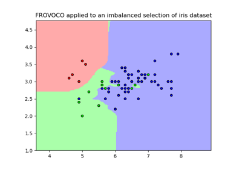
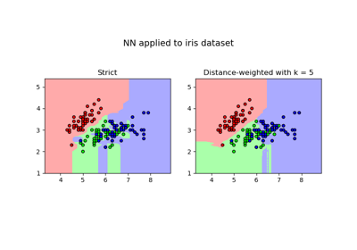
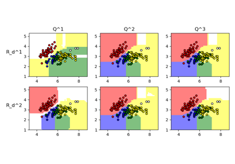
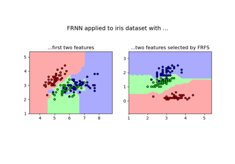
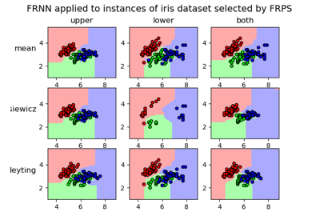

Example Gallery#
Classifiers#
Examples of the application of classifiers in fuzzy-rough-learn.

Imbalanced multiclass classification with FROVOCO
Imbalanced multiclass classification with FROVOCO

Multiclass classification with NN
Multiclass classification with NN
Multiclass classification with FRNN
Multiclass classification with FRNN

Multilabel classification with FRONEC
Multilabel classification with FRONEC
Data descriptors#
Examples of the application of data descriptors in fuzzy-rough-learn.

Preprocessors#
Examples of the application of preprocessors in fuzzy-rough-learn.

Feature selection with FRFS

Instance selection with FRPS